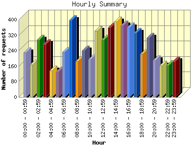
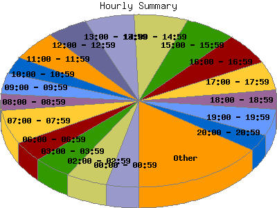

Report generated by Analog 6.0 and Report Magic 2.21
|
Web Server Statistics for "Harish Narayanan (hnarayan) - July 2005" Report generated by Analog 6.0 and Report Magic 2.21 |
The Hourly Summary identifies the level of activity broken down by each hour. Remember that one page hit can result in several server requests as the images for each page are loaded. This summary also compares the level of activity during working hours and after hours as a total for the report time frame.


| Hour | Number of requests | Number of bytes transferred | Percentage of the bytes | Percentage of the requests | |
|---|---|---|---|---|---|
| 1. | 00:00 - 00:59 | 230 | 14.505 MB | 6.12% | 3.73% |
| 2. | 01:00 - 01:59 | 168 | 15.731 MB | 6.63% | 2.73% |
| 3. | 02:00 - 02:59 | 297 | 13.180 MB | 5.56% | 4.82% |
| 4. | 03:00 - 03:59 | 273 | 17.656 MB | 7.45% | 4.43% |
| 5. | 04:00 - 04:59 | 136 | 4.451 MB | 1.88% | 2.21% |
| 6. | 05:00 - 05:59 | 131 | 4.066 MB | 1.72% | 2.12% |
| 7. | 06:00 - 06:59 | 233 | 7.012 MB | 2.96% | 3.78% |
| 8. | 07:00 - 07:59 | 398 | 10.576 MB | 4.46% | 6.46% |
| 9. | 08:00 - 08:59 | 186 | 9.724 MB | 4.10% | 3.02% |
| 10. | 09:00 - 09:59 | 240 | 10.467 MB | 4.41% | 3.89% |
| 11. | 10:00 - 10:59 | 196 | 5.533 MB | 2.33% | 3.18% |
| 12. | 11:00 - 11:59 | 343 | 10.538 MB | 4.44% | 5.56% |
| 13. | 12:00 - 12:59 | 297 | 6.436 MB | 2.71% | 4.82% |
| 14. | 13:00 - 13:59 | 359 | 12.467 MB | 5.26% | 5.82% |
| 15. | 14:00 - 14:59 | 389 | 15.532 MB | 6.55% | 6.31% |
| 16. | 15:00 - 15:59 | 369 | 9.486 MB | 4.00% | 5.99% |
| 17. | 16:00 - 16:59 | 359 | 10.585 MB | 4.46% | 5.82% |
| 18. | 17:00 - 17:59 | 331 | 10.750 MB | 4.53% | 5.37% |
| 19. | 18:00 - 18:59 | 224 | 9.396 MB | 3.96% | 3.63% |
| 20. | 19:00 - 19:59 | 307 | 9.815 MB | 4.14% | 4.98% |
| 21. | 20:00 - 20:59 | 189 | 9.120 MB | 3.85% | 3.07% |
| 22. | 21:00 - 21:59 | 162 | 3.749 MB | 1.58% | 2.63% |
| 23. | 22:00 - 22:59 | 164 | 10.355 MB | 4.37% | 2.66% |
| 24. | 23:00 - 23:59 | 184 | 6.003 MB | 2.53% | 2.98% |
| Work Hours (8:00am-4:59pm) | 2,738 | 90.767 MB | 38.28% | 44.41% | |
| After Hours (5:00pm-7:59am) | 3,427 | 146.366 MB | 61.72% | 55.59% | |
This report was generated on August 2, 2005 20:36.
Report time frame July 1, 2005 00:03 to July 31, 2005 23:54.
| Web statistics report produced by: | |
 Analog 6.0 Analog 6.0 |  Report Magic 2.21 Report Magic 2.21 |